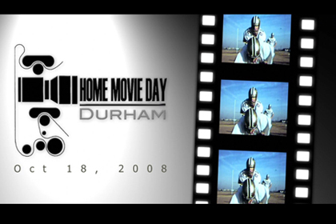
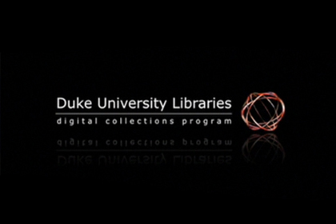
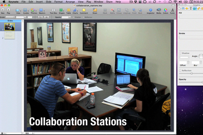
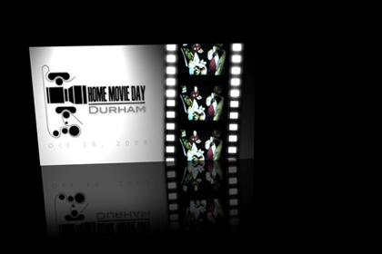
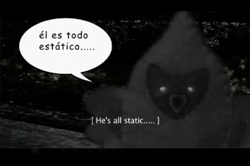

Home Movie Day : Durham 2008 Promo
I made this short promotional film for Home Movie Day: Durham 2008. The color footage comes from a 16MM film that I digitally transferred in 2006.
Software: Illustrator, Soundtrack, Motion, & Final Cut Pro
tvc15Media (2008)
Duke University Libraries : Digital Collections
I made a series of Digital Collections Program intros when I was part of the Digital Collections Implementation Team at Duke University Libraries. This particular one features an image from the Sidney D. Gamble Photographs collection.
Software: Illustrator, Soundtrack, & Motion
Duke University Libraries (2008)
Duke University Libraries : Digital Collections
I made a series of Digital Collections Program intros as part of the Digital Collections Implementation Team at Duke University Libraries. This particular one allowed me to use a live reflection technique in Apple's Motion software.
Software: Soundtrack & Motion
Duke University Libraries (2008)
Arrival : A Short Film
I made this short film as part of the exhibition, "A Celebration of the Human Spirit", at Arizona State University Libraries. I digitally transferred the audio from an oral history recording from 1979 on audio cassette. I also digitally transferred the color footage from a 60 year old 16MM film belonging to the Arizona Historical Foundation.
Software: Illustrator, Photoshop, LiveType, Audacity, Motion, & Final Cut Pro
Arizona State Universiy Libraries (2006)
HPU Libraries : Keynote to PowerPoint Tutorial
I made this tutorial for High Point University Libraries showing patrons how to convert their Keynote files into PowerPoint files.
Software: ScreenFlow & Keynote
High Point University Libraries (2010)
HPU Libraries : NetLibrary Tutorial
I made this silent tutorial for High Point University Libraries showing patrons how to search for and use eBooks from NetLibrary. The tutorial portions of the video were produced using screen captures and callout actions from ScreenFlow.
Software: Illustrator, Photoshop, Motion, Final Cut Pro, & ScreenFlow
High Point University Libraries (2009)
tvc15Media Promo
I made this promotional video in 2007.
Software: Illustrator, Photoshop, Soundtrack, Motion, & Final Cut Pro
tvc15Media (2007)
STANCO e NUDO
This video was made as an example of how to combine home movie footage and screen captures with chroma keying and motion graphics.
Software: Illustrator, Photoshop, Soundtrack, Quicktime Pro, ScreenFlow, Motion, & Final Cut Pro
tvc15Media (2008)